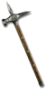

Earthshaker
Battle Hammer
Damage: 35-58
Required Level: 43
10% chance to cast level 15 Fissure on striking
+1 Knockback
+30% Increased Attack Speed
+200-230% Enhanced Weapon Damage
+1 Hit Blinds Target
+3 to Elemental Skills
+50 Maximum Durability
Unique Hammer
Earthshaker
- Type
- Hammer
- Base
- Battle Hammer
- Tier
- Exceptional
- Required level
- 43
- Item level
- 30
- Required strength
- 100
- Max sockets
- 4